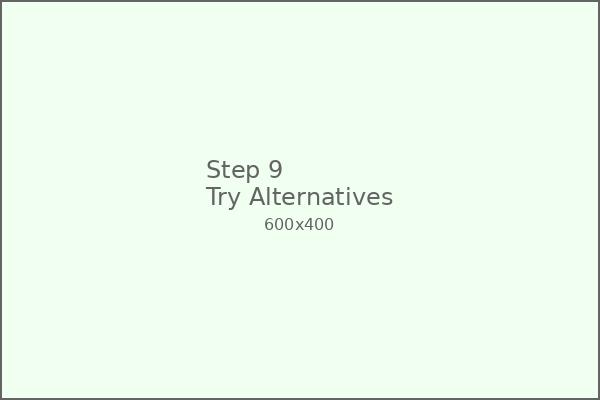

üïµÔ∏è Invisible Ink
Create amazing invisible ink and write secret messages that magically appear when heated! This classic chemistry experiment teaches about acids, oxidation, and chemical reactions.
üõçÔ∏è Materials Needed
Fresh Lemon
1 large lemon (freshly squeezed)
Cotton Swabs
For writing with ink
White Paper
Smooth, white writing paper
Small Bowl
For holding lemon juice
Small Paintbrush
Alternative writing tool
Iron
Heat source (adult supervision)
Hair Dryer
Alternative heat source
Light Bulb
60W incandescent bulb
üìã Step-by-Step Instructions
Prepare Your Workspace

Set up a clean workspace with all your materials. Cover the surface with newspaper to protect it from lemon juice spills.
Extract Fresh Lemon Juice
Cut the lemon in half and squeeze the juice into a small bowl. You'll need about 2-3 tablespoons of fresh lemon juice.
Strain the Juice
Strain the lemon juice to remove any pulp or seeds. Clear juice works best for writing smooth, invisible messages.
Prepare Writing Tools
Gather your cotton swabs and small paintbrush. These will be your "pens" for writing invisible messages.
Write Your Secret Message
Dip your cotton swab in lemon juice and write your secret message on white paper. Press gently but firmly to get enough juice on the paper.
Let the Message Dry
Allow your invisible message to dry completely. This usually takes 5-10 minutes. The message should be completely invisible when dry.
Prepare Heat Source
Have an adult help you prepare a heat source. An iron set to low heat works perfectly for revealing messages.
Reveal the Message
With adult help, gently iron over your invisible message. Watch as the text magically appears in brown letters!
Try Alternative Heat Sources
Experiment with different heat sources like a hair dryer or holding the paper near (not touching) a light bulb.
Create Multiple Messages
Create several secret messages with different content. Try writing codes, drawings, or treasure maps!
Test Different Papers
Try writing on different types of paper to see which works best. Smooth, white paper usually gives the clearest results.
Share Your Secret Messages
Share your invisible ink messages with friends and family! Teach them how to reveal the hidden text using heat.
üéì What Your Child Learns
Chemistry
Understanding acids, oxidation reactions, and how heat can cause chemical changes in materials.
History & Espionage
Learning about secret communications, codes, and how invisible ink was used throughout history.
Scientific Method
Testing different materials, heat sources, and papers to find the best combinations.
Creative Writing
Encouraging storytelling, secret codes, and creative communication methods.
üî¨ The Science Behind It
Oxidation Reaction
Lemon juice contains citric acid. When heated, the acid undergoes oxidation, breaking down and turning brown. This is similar to how a cut apple turns brown when exposed to air.
Heat Activation
The heat provides energy needed for the oxidation reaction to occur quickly. Without heat, the process would take much longer or might not happen at all.
Other Invisible Inks
Many organic substances can create invisible ink: milk, honey, white wine, and even onion juice! They all contain compounds that turn brown when heated.
üß™ Different Types of Invisible Ink
Lemon Juice
Classic and easy to use. Creates clear brown text when heated.
Milk
Readily available household item. Creates light brown text when heated.
Baking Soda Solution
Mix with water to create alkaline ink. Reveals with grape juice!
White Crayon
Write with white crayon, reveal by painting over with watercolor.
üõ°Ô∏è Safety Guidelines
Heat Source Safety
Adult supervision required for all heat sources. Never let children handle hot irons or other heating devices alone.
Eye Protection
Avoid getting lemon juice in eyes. If contact occurs, rinse immediately with clean water.
Clean Workspace
Clean up lemon juice spills immediately to prevent stickiness and staining.
Ventilation
Work in a well-ventilated area, especially when using heat sources to reveal messages.
üéØ Fun Activities to Try
Treasure Map
Create an invisible treasure map leading to hidden prizes around your house or yard!
Secret Codes
Write messages in code using invisible ink for double-secret protection!
Spy Games
Create a spy club with friends and exchange secret missions written in invisible ink!
Invisible Art
Create artwork that only appears when heated - surprise pictures and drawings!